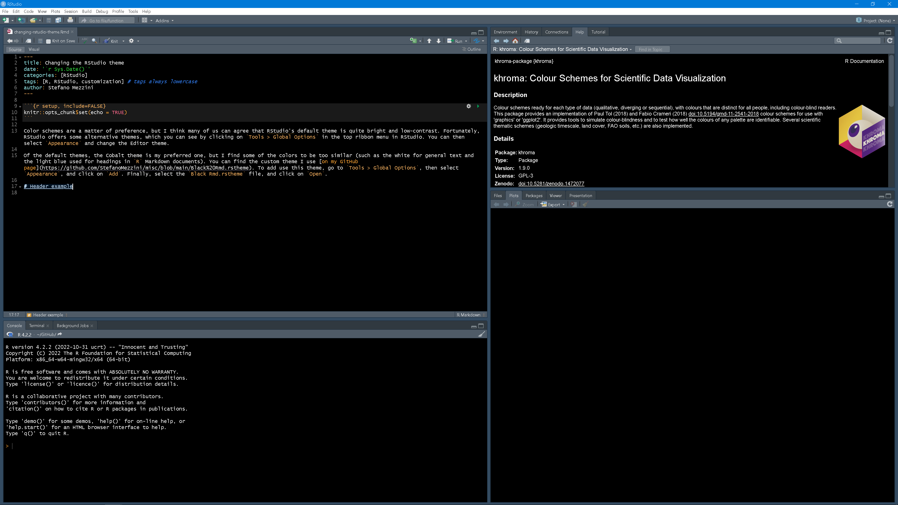

Color schemes are a matter of preference, but I think many of us can agree that RStudio’s default theme is quite bright and low-contrast. Fortunately, RStudio offers some alternative themes, which you can see by clicking on Tools > Global Options in the top ribbon menu in RStudio. You can then select Appearance and change the Editor theme.
Of the default themes, the Cobalt theme is my preferred one, but I find some of the colors to be too similar (such as the white for general text and the light blue used for headings in R Markdown documents). You can find the custom theme I use on my GitHub page. To add use this theme, go to Tools > Global Options, then select Appearance, and click on Add. Finally, select the Black Rmd.rstheme file, and click on Open.
